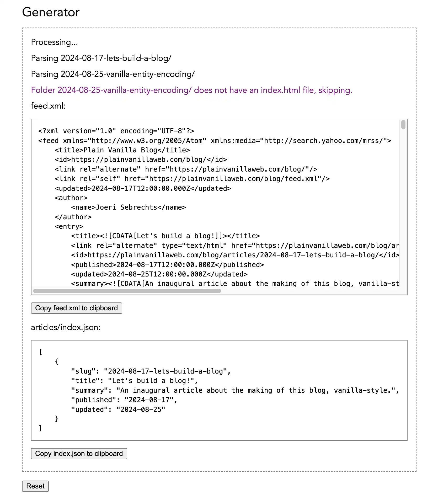

As I write this paragraph it is my birthday, and it seemed like as good an opportunity as any to start a blog. This blog post will be a bit unusual, as I will be writing it while I'm making the blog's inner workings. But before I get around to explaining how it was made, let me start with why.
Origin story
I have been building web sites since the late 90's, and over the years there were always two constants: (1) browsers were terrible developer platforms, (2) new tools and frameworks built ever taller on top of them. The tools were necessary, but their growing complexity frustrated me, and in that frustration lies the origin of this blog.
A few years ago something unexpected happened: Microsoft moved away from their (underfeatured) Trident browser engine. Suddenly there was a new baseline of browsers, a capable baseline. Browsers got good! I explored what modern browsers could do as a developer platform, and grew excited with the possibilities to treat the browser itself as the framework, without a middleman. That eventually led into making the Plain Vanilla website, a framework tutorial for the web standards platform.
In building this website editorial choices had to be made. Trying to explain too much would only confuse people, so the tutorial was trimmed of its fat. There is however so much more to explore, and that is where this blog enters the picture. Here I will talk about some of the things that didn't find a home in the Plain Vanilla tutorial, and document the new things that do.
What is a blog anyway?
Of course, a blog about vanilla web development has to be built vanilla-style. That means no build steps, no server-side logic, no frameworks or libraries. Bottom line that means throwing up a bunch of HTML pages with an index page linking them together, but that by itself isn't enough. The idea is to make a full-fat modern feeling blog, something that has what people expect a blog to have. So off I went to look at popular blogs and build a list of features.
A modern blog will have ...
- One page per article, easy for sharing as a link and discovery by Google.
- A welcome page, with one or more hero cards leading to articles and a list of cards for recent articles.
- An archive page, with the full history of articles linking to the article pages.
- An RSS feed, for the 20 most recent articles, containing the full text.
- Comments on every article. This is a big one.
- Some colors and imagery, to spruce things up and please the readers.
The challenge was: how to do all of that within the vanilla constraints that I set myself?
Article-first design
The core of the blog experience is the article, so getting that right is key and that makes it the best place to start. Lacking any kind of generator or server-side routing, each article has to be written as a discrete html page in order to be discoverable by Google. Authoring those html pages should be straightforward, with minimal boilerplate.
After careful consideration we present to you, an article page blueprint...
This does several things for me. It keeps the <head> section as minimal as possible. It also moves the navigation at the top and bottom into dedicated web components. The header component accepts the article's image and title as child elements, neatly leaving the main element containing just the article's content and nothing else, making it easy to extract (but more on that later).
When users have scripting disabled they won't get the header navigation,
but thanks to this CSS they do get a warning:
@media (scripting: none) { blog-header::before { content: ' ... ' } }
This approach frees me from thinking about noscript warnings while writing an article.
Finally, for comments I considered Disqus, but didn't want to include their embed. So instead the footer accepts the URL to a mastodon toot about the article, and will automatically generate a link that goes there. Given that the blog has a technical audience I'm pretty sure they can figure out how to reply over there. This approach can be extended to show replies inline on the page by calling the Mastodon API, but I didn't tackle that yet. It's somewhat cumbersome to first post an article, then toot about it, and then update the article with the toot's URL, but I'll survive. Incidentally, I still giggle like a schoolgirl inside my head every time I type the word toot.
Organizing files
Next comes the question how to organize the article files into a coherent structure. After thinking it over, this is what I landed on:
articles/YYYY-MM-DD-some-blog-title/index.htmlimage.jpeg- other files used in the article ...
components/: the blog's shared web componentsindex.html: the main landing pagearchive.html: the archives pageindex.js/css: shared resourcesfeed.xml: the RSS feed
By wrapping every article and all its resources into a folder, each article can get as messy and complicated as it wants. The shared index.js and index.css is separate from that of the main site to keep the blog's resources out of the Plain Vanilla site's pages, and vice versa.
Building indexes
You wouldn't think a blog has a need for many indexes, but in fact this modest blog will have three:
- The recent posts section on the main landing page
- The recent posts in the RSS feed
- The full list of articles in the archive page
The recent posts section on the index page can be built by reading the RSS feed, so that's one down. The full list of posts however cannot, so that needs a separate step to build the list of links from the folder of articles. And of course, the RSS feed itself contains full text contents, so that too needs a separate step to build. For these steps I considered various options:
- ❌
Manually keeping the files in sync - It sounded like a lot of work, and error-prone, so a hard no on that one.
- ❌
A generator script, and a package.json - This is what I would normally go for, relying on a bunch of npm dependencies and a bunch of scripting to process the articles into the index files that are needed. It felt like cheating to bring in node and its ecosystem, so again this was a no.
- ✅ A separate generator webpage
- I've wanted to play around with the File System API for a while, and this seemed a good opportunity. Turning the generator into a webpage also leaves options for actually running the web components and extracting their dynamically rendered content.
For the generator page, I built a dedicated web component that allows opening or dropping the
local blog/ folder with the newly written or updated articles,
and then will process those into a feed.xml and index.json.
The JSON file is used to load the contents of the archive page.
The RSS feed is particularly tricky, because there is a limited set of tags that it should contain.
By loading the article's HTML into a DOM parser, and replacing all unsupported tags (like the code viewer)
the HTML can be transformed into something that can be used as RSS feed entry contents.
The core logic of the generator extracts the article's metadata and transforms the HTML:
To give you an idea of what generator.html looks like in use:

The generator JS ended up around 250 lines of code, so not too cumbersome to build or maintain.
If you're curious about the generator, check out the
blog's code on Github.
It can be found in generator.html and generator.js.
The user experience of writing a blog post then boils down to this:
- Create an article folder and write the article as HTML
- Open the generator page
- Drop the blog folder on the generator, it will automatically process the articles
- Copy the
feed.xmlandindex.jsontext to their respective files - Commit and push the changes
- Optionally: toot on mastodon, add the toot URL in the page, commit and push
Not too shabby...